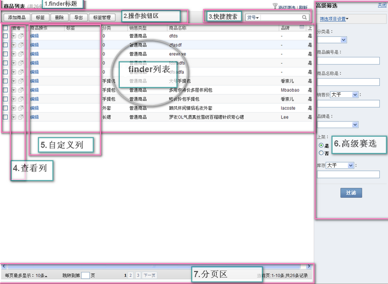

创建时间： 2011年5月12日
如图Finder区域
按钮操作区域 按钮submit表示要选译finder数据才会请求,href则直接请求。
对选择Finder数据的操作，需在按钮上绑定属性submit指定提交地址，通过按钮上的target属性和confirm属性判断处理类型.
常用处理类型:
target="dialog::{width:400,title:'设置标签'}";
<a href="javascript:void(0);" target="dialog::{width:400,height:170,title:'导出'}" submit="index.php?" icon="download.gif" label="导出">
<span>导出</span></a>
<a target="refresh" submit="index.php" icon="download.gif" label="商品上架" href="javascript:void(0);"><span>商品上架</span></a>
<a href="javascript:void(0);" submit="index.php?" confirm="确定删除选中项？删除后可进入回收站恢复" icon="del.gif" label="删除"><span>删除</span></a>
如请求要弹出dialog：
<a target="dialog::{width:300,title:'配置列表项'}" href="index.php" title="列表项配置" class="lnk-operation"><span>列表项配置</span></a>
finderGroup[finderID],refresh(); //finderID需PHP后台抛出
opener.finderGroup[finderID],refresh(); /finderID需PHP后台抛出
element.getParent('.dialog').retrieve('instance').close();
或者为某个元素添加isCloseDialogBtn属性如：<span isCloseDialogBtn=true>取消</span >
_from.store('target',{onComplete:function(response){
_from.getParent('.dialog').retrieve('instance').close(); //此处可加入提交成功任何处理代码
finderGroup[finderID],refresh();
}});
或在dialog中的from元素中加入属性isCloseDialog,如要刷新finder则在返回中返回JSON( {finder_id:'eff564'} );